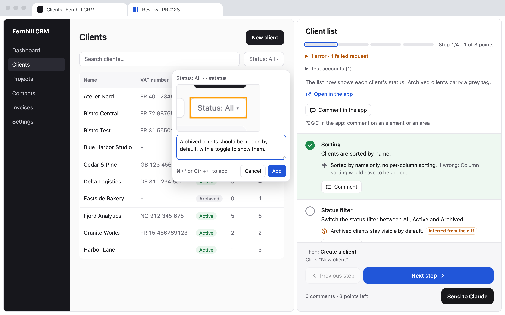
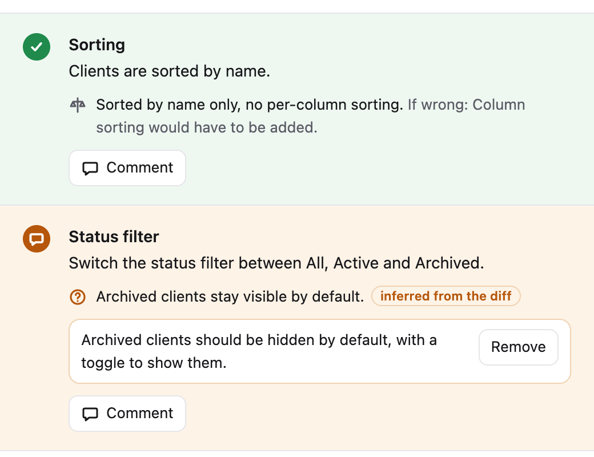

Don't merge what you haven't seen.
Review Walkthru turns a pull request into a real acceptance test: every screen, every decision Claude made, checked in your running app.

> /review-walkthru 128
PR #128: 9 files, app on localhost:8000
✓ Review ready: 4 steps, 9 points
● Review received: 1 comment. Fixing.
Decision, validatedSorted by name only.
DoubtArchived clients stay visible by default.
Claude finished the feature. Do you know everything it built?
A big PR from Claude ends with a long message: what to test, what it decided without you, what it left for later. You test from memory, switch between the chat and the browser, and send feedback one line at a time.
-
"I don't know everything that changed."
Claude writes a walkthrough that covers every visible change in the PR, screen by screen, in the order you use the app.
-
"I miss the decisions Claude made alone."
Each decision and each doubt sits next to the screen that shows it, with what it would cost to change.
-
"Checking it all means endless back and forth."
Your app and the review sit side by side. Check each point, comment on the review or right on the app, and send everything back to Claude in one click.

From a real review
A 7-screen feature in a production SaaS, reviewed with Review Walkthru.
-
Round 1
19 decisions
7 doubtssurfaced across 7 steps and 18 points. 4 comments sent back.
-
Round 2
1 comment
left after Claude's fixes.
-
Round 3
2 of 7 steps
to recheck. No comment. Pushed.
One review, from the command to the push
You talk to Claude in Claude Code and look at the app in Chrome. Nothing else changes in how you work.
-
1Run
/review-walkthru 128Claude reads the PR, its commits and the conversation that built it. It starts the app, creates the test accounts, and writes the walkthrough.
-
2Walk through
Chrome opens the review next to the app, in split view. Each step lists what to do, and the decisions and doubts behind it.
-
3Send
Check a point to validate it, or comment on it. To point at the app itself, press ⌥⇧C, then click an element, select a text or frame an area: Claude gets a capture of it and the app's console errors. One click sends the whole review to Claude Code, mid-round if you want.
-
4Fix and repeat
Claude fixes in the conversation and offers a next round with only the steps left to check. When a round passes with no comment, it pushes, after your yes.
Try it. Nothing to install.
The real review page, running on sample data from a made-up CRM. Check a point, comment on another, click "Open in the app", then send it to Claude.
What Claude receives
The review file, as Claude reads it
Install
Two minutes, once per machine.
1Add the plugin in Claude Code
/plugin marketplace add Tilotiti/review-walkthru
/plugin install review-walkthru@review-walkthru2Add the Chrome extension
The review runs in it: it opens your app next to the review page, in split view, and lets you comment right on the app. Chrome 155 or later.
Chrome Web Store, pending review3Review a pull request
/review-walkthru 123Needs macOS or Linux, Node.js 18 or later, and the GitHub CLI signed in.
Questions
Which apps does it work with?
Any web app you can run on your machine. The first time, Claude asks how to start it, which database to use and which data to create, then remembers your answers for that project.
Does Claude push without me?
No. Claude commits its fixes in a worktree and pushes only after you say yes in the conversation. It never comments on the PR and never edits its description.
Where does my data go?
Reviews stay in ~/.claude/plugins/data/ on your machine. The extension reads the app only during a review, and sends what it reads to that folder through the local relay, never to a server. The review you send goes to Claude Code, like any other prompt. Details on the privacy page.
Do I need the Chrome extension?
Yes. It opens the app next to the review page, lets you comment on the app with a capture, shows the app's console errors in each step, and fills the step's form with the data Claude picked. /review-walkthru checks that Chrome has it and opens its Store page if not.
Does it run on Windows?
Not yet: macOS and Linux today. Windows support is in testing: the plugin's scripts pass their tests on Windows, and a first full review on a Windows machine comes next.